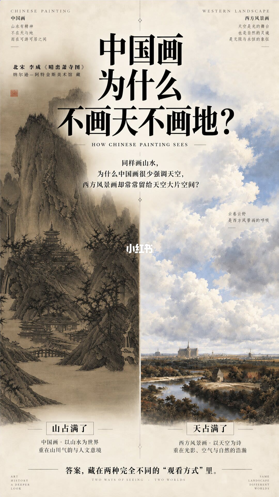
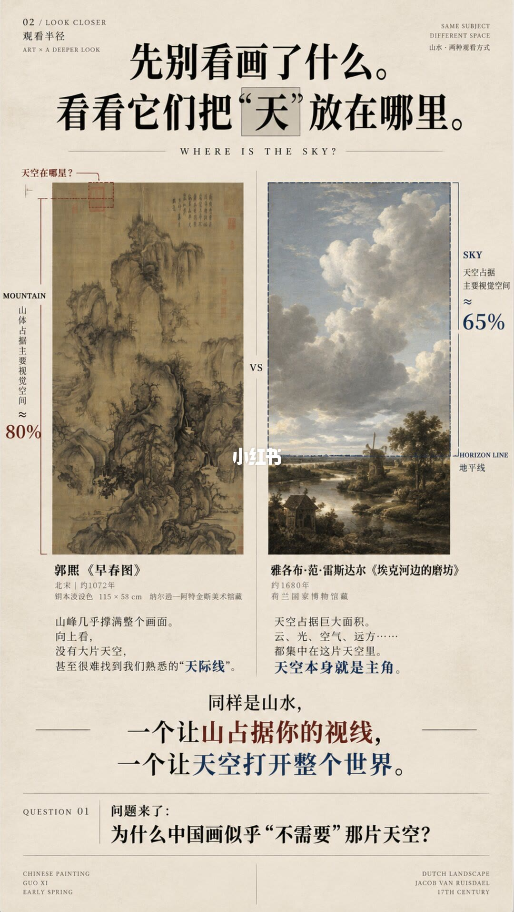
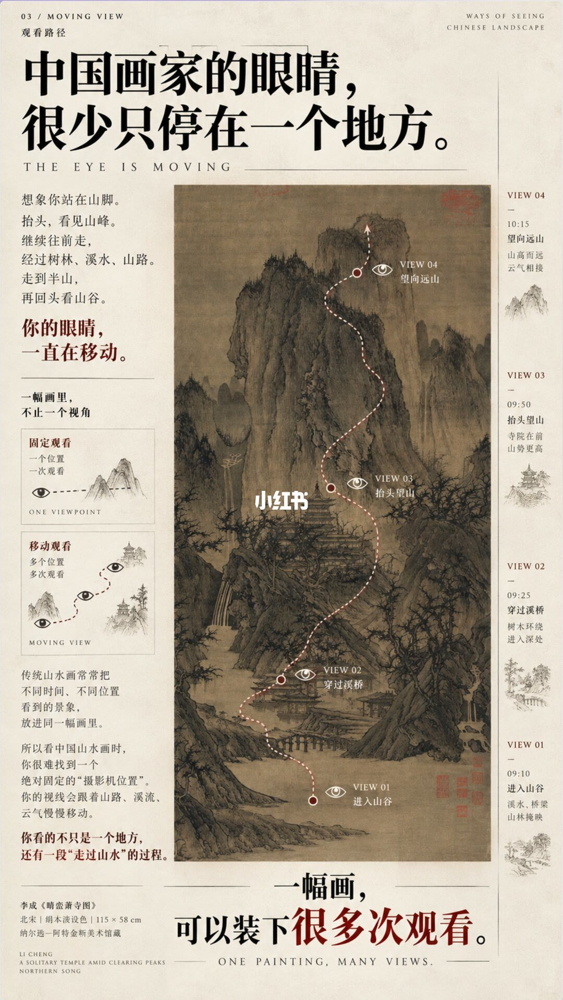
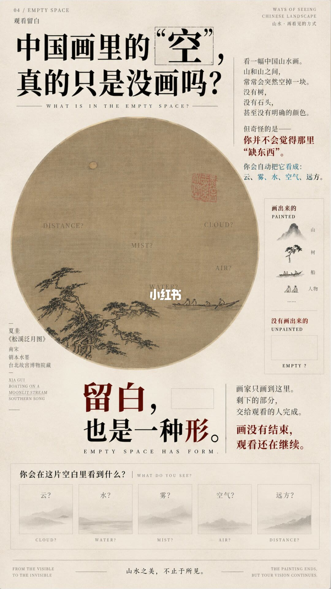
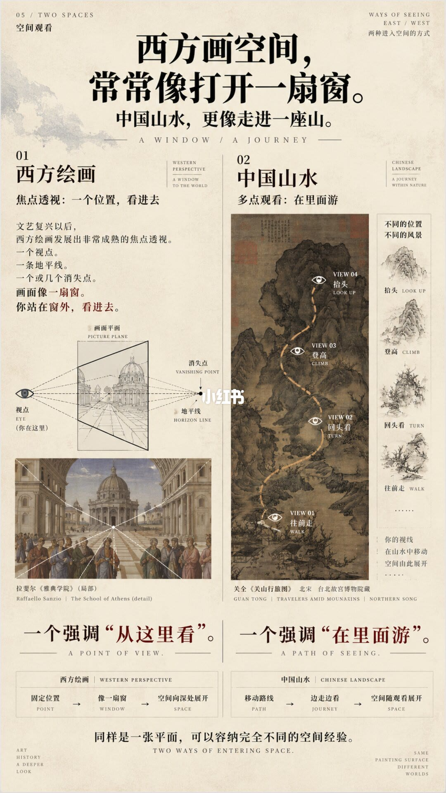
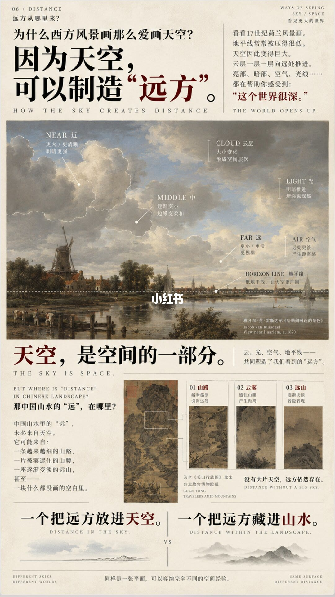
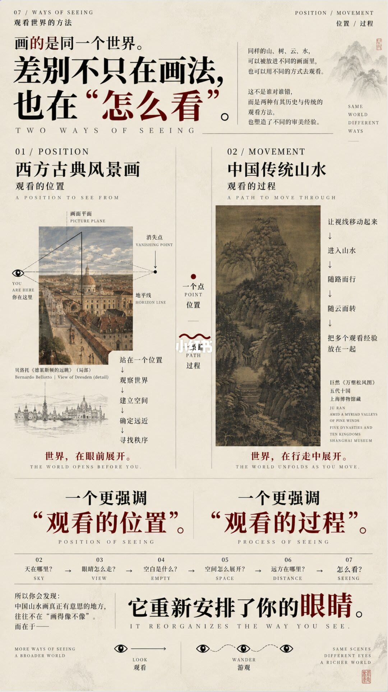

图文实录 · 小红书 · 观看半径
中国画，为什么不画天不画地？
不是漏画。七页图把原因放在观看方式上：中国山水让山占满视线，人在画里走；西方风景常让天空占满画面，人站在一个点往里看。空白被当成云、雾、水和远。
1/7
山占满，天占满
左边是李成《晴峦萧寺图》，山从下铺到上。右边一幅西方风景把地平线压低，云占了大部分。页底写：答案藏在两种观看方式里。山水的精神不在单独的天或地，而在可游可居的中间。

2/7
天被放在哪里
郭熙《早春图》里山体约占视觉空间八成，几乎找不到地平线。雷斯达尔《埃克河边的磨坊》里天空约占六成五，并标出地平线。页末问：中国画为什么似乎不需要那片天空。

3/7
眼睛不停在一处
仍用《晴峦萧寺图》。一条路径从入谷、过桥、仰望山寺，走到远山，旁边还标了时间。一幅立轴装的是多次观看，不是一个固定机位。

4/7
空不是没画
夏圭《松溪泛月图》大片空白上标着远、云、雾、空气、水。画了的是山、树、船、人。留白也被当成一种形：画家给出起点，观看在空白里继续。

5/7
窗口，或者进山
西方一侧用焦点透视：一个视点、一条地平线、一个消失点，图例是拉斐尔《雅典学院》。中国一侧用关仝《关山行旅图》，路径分成往前走、回头看、登高、抬头。一边像打开窗，一边像在山里走。

6/7
远从哪来
西方例子用雷斯达尔的哈勒姆附近风景：低地平线，近处云大而清楚，远处变小、变淡。中国例子仍是关仝：山路变细、云雾隔开山腰、远山变淡，远也可以来自一块没画的空白。

7/7
位置，还是一条路
收束页把西方写成一个观看位置：站定、建立空间、判断远近。中国山水写成一条路：目光移动，跟着路径和云，把多次观看放在一起。页上的问题包括「天在哪里」「空白是什么」。最后一句是重新安排眼睛，从观看变成游观。

汇总
不画天和地，是为了让眼睛能走
七页的结论是：中国画不是省略天空和地面，而是不用一条地平线把世界切成上下两块。山占画面，空白承担云雾水远，视点沿路径移动。这是观看半径用宋画和几幅西方名作做的对照，百分比是图上的估计，不是测量报告。它也不等于所有中国画都不画天空。